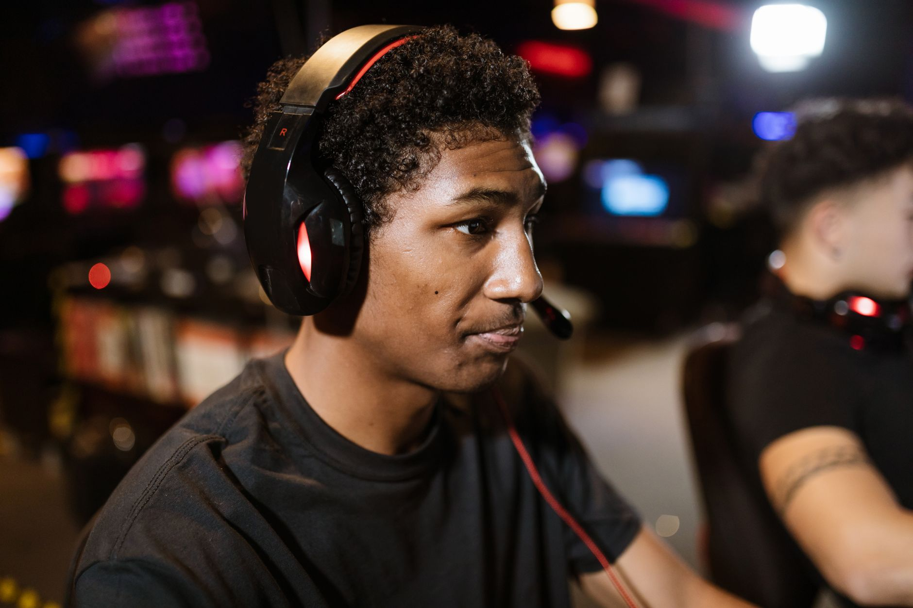

The importance of a growth mindset
In a recent interview that has captured the attention of the competitive gaming community, rising star Kyxsan shared profound insights into what it takes to survive and thrive in the upper echelons of esports. For many players, the transition from amateur ranks to professional leagues is filled with immense pressure, but Kyxsan views this pressure as a catalyst for personal development rather than a barrier to success.
The core of this philosophy lies in the concept of a growth mindset. Instead of viewing mistakes as failures, Kyxsan treats them as data points that can be used to refine mechanics, decision-making, and teamwork. This psychological approach is essential when competing against the best in the world, where even a millisecond of hesitation can result in a loss.
Learning from the veterans of the game
One of the most striking aspects of Kyxsan's commentary is the emphasis placed on the value of veteran teammates. In professional esports, experience is a currency that cannot be bought, only earned through thousands of hours of competition. Kyxsan recognizes that being surrounded by seasoned professionals provides a unique educational environment that is impossible to replicate in solo play.
I'm always open to feedback; when you play with so many experienced and good players, you can learn from every one of them.
By observing how veterans handle high-pressure situations, manage their energy, and communicate during chaotic rounds, younger players can accelerate their learning curve. This mentorship, whether formal or informal, is the backbone of successful esports organizations that aim to build long-term dynasties.
The role of feedback in team success
Feedback is often a sensitive topic in professional settings, but Kyxsan highlights it as a vital tool for improvement. In a team-based environment, ego can often be the enemy of progress. If a player is too defensive to accept criticism, the entire team suffers, as the underlying tactical errors remain unaddressed.
When a player actively seeks out feedback, they demonstrate a level of maturity that coaches and team owners look for when building a winning roster. It shows that the player is committed to the collective goal of the team rather than just their personal statistics.
Navigating the modern esports landscape
The landscape of esports is changing rapidly, with more structured leagues and larger prize pools than ever before. As the industry matures, the demand for players who possess both mechanical skill and emotional intelligence is skyrocketing. Kyxsan's approach aligns perfectly with the modern professional standard.
As teams compete in major international events, the ability to absorb information on the fly becomes a competitive advantage. The players who can listen to their coach, process the feedback from their captain, and immediately apply it to the next round are the ones who will ultimately lift the trophies.
Looking toward the future of competition
As we look ahead to the upcoming seasons, the competition is only set to get fiercer. Major tournaments are being announced with increasing frequency, and the level of play is reaching unprecedented heights. Fans can expect to see more players adopting the Kyxsan model of continuous learning and humility.
For those following the professional circuit, keeping an eye on team compositions and player development is key. We are seeing a shift where the synergy between a veteran leader and a hungry newcomer is becoming the gold standard for competitive success.
If you are interested in seeing how the world's best teams are preparing for the biggest stages, you should check out our recent coverage on the Top 14 Teams Confirm Attendance for PGL Bucharest 2027 to see which rosters are shaping up to be the most formidable.
See Also
If you enjoyed this Esports News article, check out Top 14 Teams Confirm Attendance for PGL Bucharest 2027 for more useful reading.